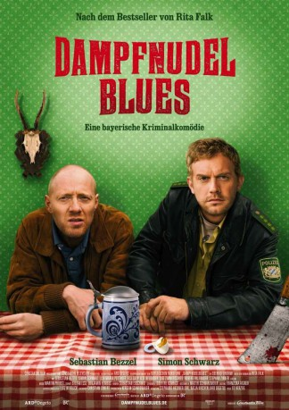

#8020 Dampfnudelblues
 
 IMDB-Wertung: 7.0 / 10
IMDB-Wertung: 7.0 / 10  Metascore: 0
Metascore: 0 
Gerade hat es sich Provinzpolizist Franz Eberhofer behaglich eingerichtet, da überschlagen sich die Ereignisse in Niederkaltenkirchen: »Stirb, du Sau!« hat jemand mit roter Farbe an Realschulrektor Höpfls Eigenheim geschmiert, und kurz darauf liegt dieser auch noch tot auf den Gleisen. Selbstmord? Mord? Mit der bayerischen Beschaulichkeit ist es erst mal vorbei. Stress pur für den Eberhofer Franz…
Jahr: 2013
Dauer: 86 Minuten
FSK: 12
Land: Deutschland Studio: Constantin FilmTonspuren:
Untertitel:
Auflösung: 1080p (1920x1080) Größe: 5427 MB
Genre: Komödie, Krimi
Regisseur: Ed Herzog
Drehbuch: Rita Falk
Soundtrack: Martin Probst
Darsteller:
Datei: X:\6-Hexalogie(A-Z)\Franz Eberhofer\Dampfnudelblues (2013, FSK12, 1920x1080).mkv seit 16.01.2018
Festplatte: HD Collection-3(N-Z)-6(A-Z)
 Es gibt insgesamt 9 Filme in der Gruppe '6-Hexalogie(A-Z)\Franz Eberhofer'
Es gibt insgesamt 9 Filme in der Gruppe '6-Hexalogie(A-Z)\Franz Eberhofer'